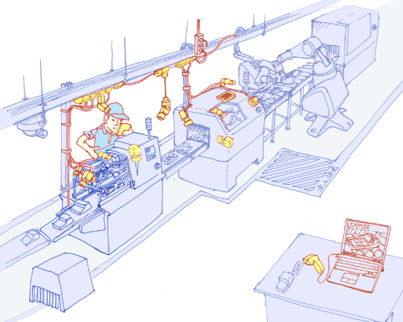
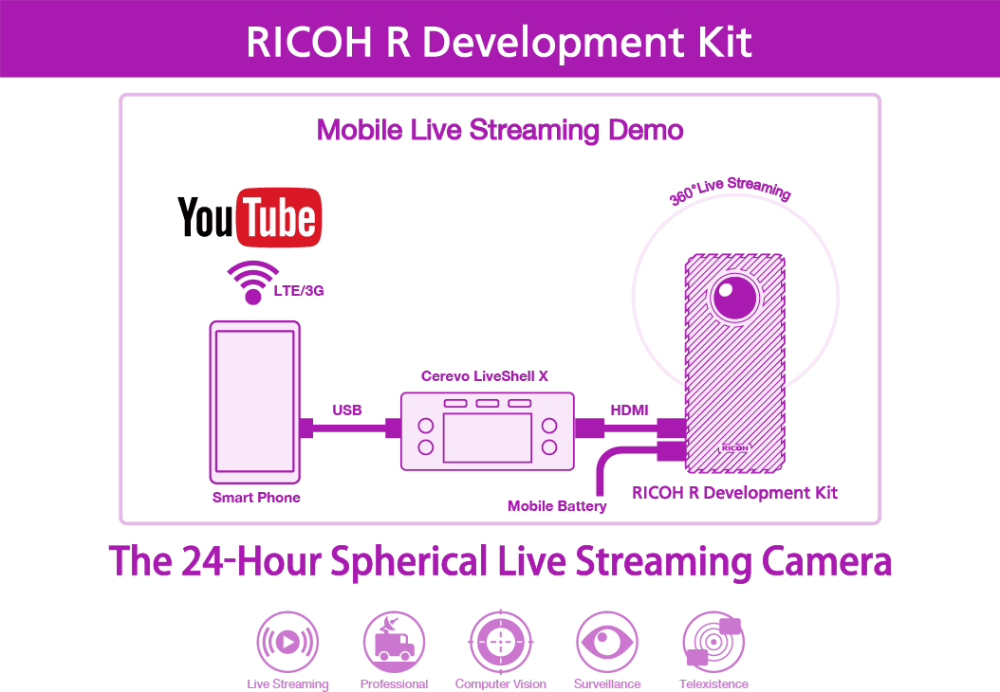
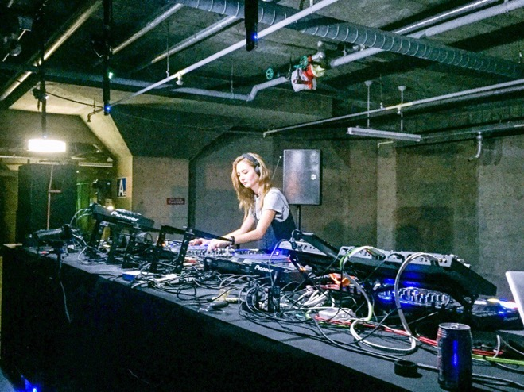
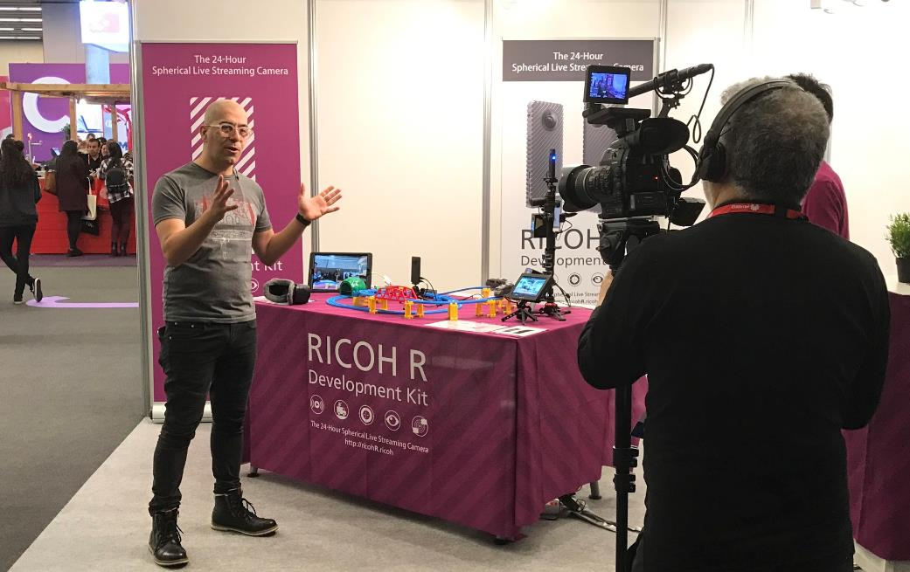
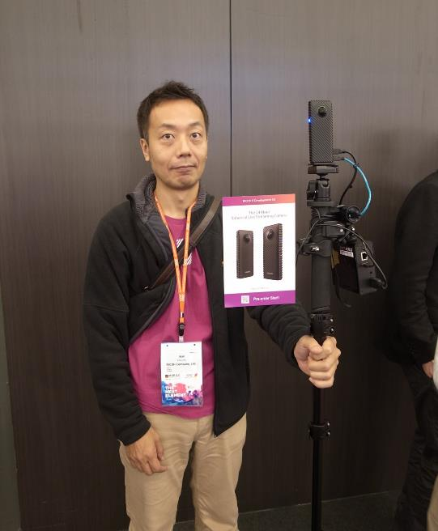
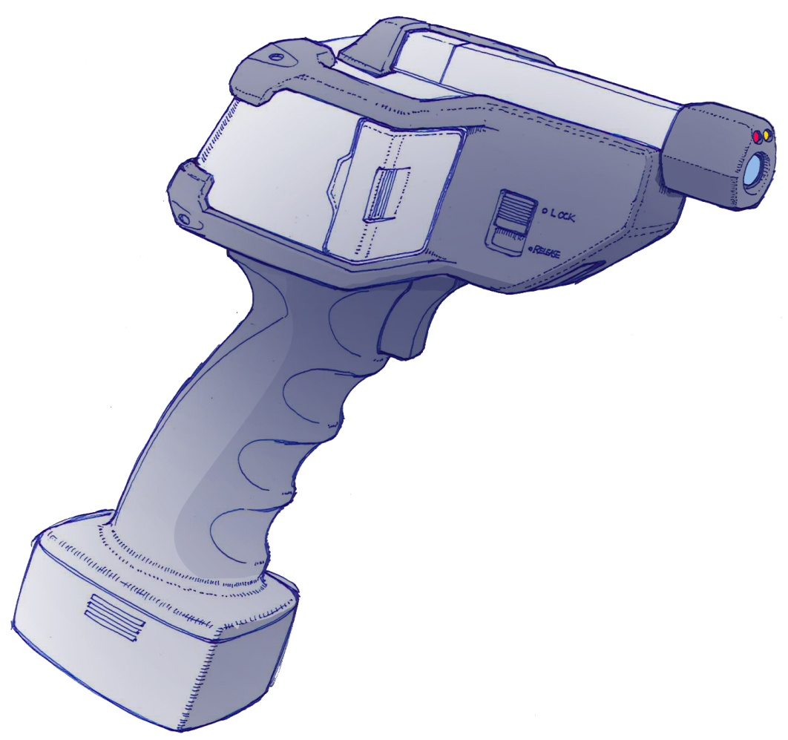
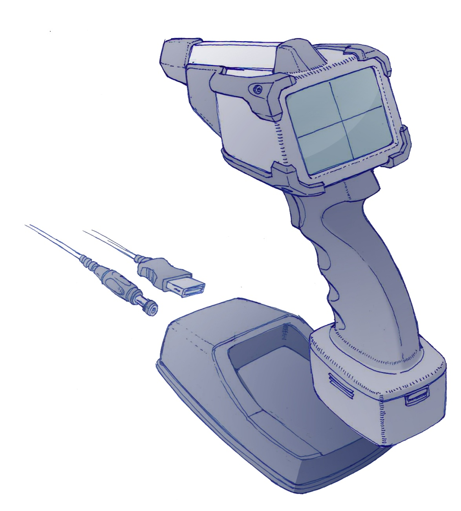

Selected Work — 05
生産現場の課題解決
PoC → 外販展開
「なぜ不良品が出るのかわからない」——現場の問いを起点に、カメラ映像による異常検知システムを開発。社内PoCの成果が、外販プロダクトへと発展した。
The Problem
同じように作っているのに、なぜ不良品が出るのか。
社内の生産部門・工場では、不良率の改善に日々取り組んでいた。バーコードによる履歴管理、工員への教育徹底——あらゆる手を打っても、なかなか改善されない現場が疲弊していく。特に新製品の生産立ち上げ期に不良が多発し、品質が安定するまで常に神経を遣う状態が続いていた。
問題は「何が起きているかが見えない」ことにあった。人の目と記録では、流れていく製品のすべての工程を追いきれない。
How We Found It
「今の課題は何ですか」と聞いても、答えは返ってこない。
工場では常に何かが起きている。だから生産本部の担当者に「今の課題は何ですか」と聞いても、答えられない。課題が無いのではなく、多すぎて言葉にならない。そこで聞くのをやめ、彼らの仕事を観察することにした。気になった場面をメモしていき、いくつかの課題候補を並べた。
そのうちの一つが、深圳工場の夜勤の時間帯——日本人社員がいないタイミングで不良品が出やすい、ということだった。夜勤の間に何かが起きていることは現場も分かっていた。ただ、確かめる手立てが無かった。
そこで一部の生産ラインに複数のカメラを置き、常時録画してみた。何日か経って同じ不良が出たとき、その録画を巻き戻した。ローラー部品の取り付け位置が、微妙にズレていた。誰も言葉にできなかった原因は、映像の中にあった。
「夜勤に何かが起きている」——現場はそこまでは知っていた。ただ、それ以上は聞いても出てこない。
一部のラインにカメラを置いて待つ。同じ不良が出た日の映像を見て、初めて原因の場所が分かった。
The Solution — All Line Recognizer
生産ラインの「全工程」を、カメラで記録する。
開発したのは「オールラインレコグナイザー（ALR）」——生産ラインの上部に複数のカメラを設置し、流れていく製品がどのように組み立てられていくかをすべて記録するシステム。
通常と異なる動き・操作を検知すると、該当時刻の映像に自動でフラグを付与。後から確認すべき映像を絞り込める仕組みにより、「何か起きたかもしれない」瞬間を見逃さず、問題の原因究明を大幅に効率化した。
全工程を人の目で追うことは不可能。記録に頼ると膨大な映像から問題箇所を探すのに時間がかかる。
全工程を複数カメラで記録 + 異常動作を自動検知してフラグ付与。確認すべき映像を即座に絞り込む。

「現場の問いは、現場にしかない。聞いて出てこないものは、置いて待つしかなかった。」
Expansion — RICOH R Development Kit
カメラ技術を、次のビジネスへ。
PoCで積み上げたカメラ活用のノウハウは、別のプロダクトへと発展した。業務用途に向けて市販のTHETAを改造した「RICOH R Development Kit（RDK）」——360度映像を24時間ライブ配信できるカメラキットとして実験的に発売した。
展示会でのデモ展示に加え、複数のベンチャー企業と共同してDJイベントやプロレスなどの360度映像をライブ配信。これまでカメラが捉えた画角の範囲でしか見られなかったコンテンツを、視聴者が自由に視点を変えながら体験できるシステムとして海外メディアでも複数報道された。
THETAをベースに業務用途向けに改造した360度ライブ配信カメラキット。24時間連続配信に対応し、モバイル回線経由でのストリーミングを実現。




Concept PoC — 現物スキャナー
遠隔地から、現物を3Dで見る。
生産現場でのもう一つの根本的な問いは、「現物を手元に持ち込まなくても確認できないか」だった。部品の不具合や製品の状態を遠隔地にいる専門家が確認するには、従来は現物を送るか、現地に赴くしかなかった。
そこで発想したのが、現場で現物をスキャンして3D映像として送信するハンドヘルドデバイスのコンセプト。ピストル型グリップに着脱式のペン型カメラユニットを組み合わせ、入り組んだ場所でも撮影できる設計とした。レーザー距離計・各種センサー・照明を内蔵し、暗所や狭所でも対象物の正確な位置・形状を取得できる。今でいうデジタルツインを現場で作り出そうという先駆的なアイデア。


「現物を送らなくても、遠隔の専門家が現場を見られる」——その発想は、今日のデジタルツインそのものだった。
What This Showed
PoCは、次の事業の種になる。
社内の課題解決を起点としたPoCが、外販プロダクトへと発展した事例として、「現場から事業をつくる」プロセスの手応えを得た経験だった。問題を特定するエスノグラフィー的なアプローチ、技術検証を社内で積み上げること、そしてそれを外部に展開するビジネスモデルを描くこと——この一連のプロセスは、その後のAdvisory業務における事業設計の思考の原型となっている。
Connected Projects